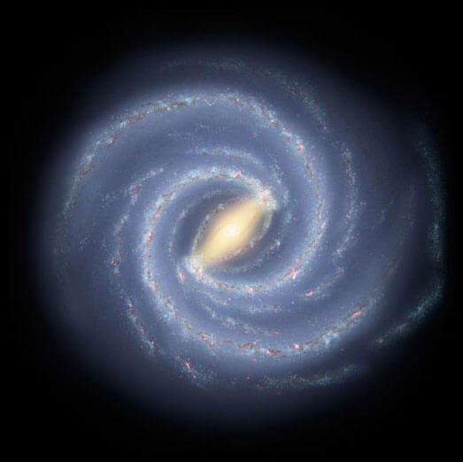
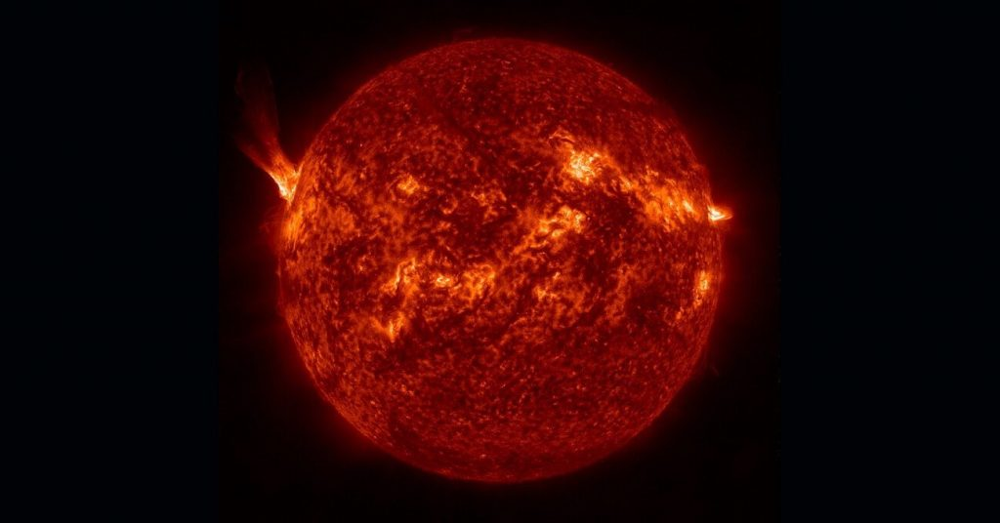
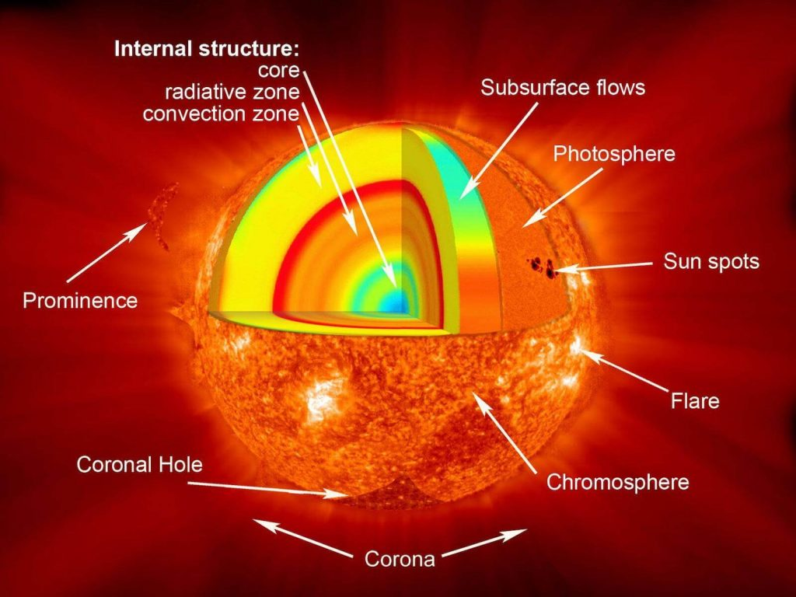
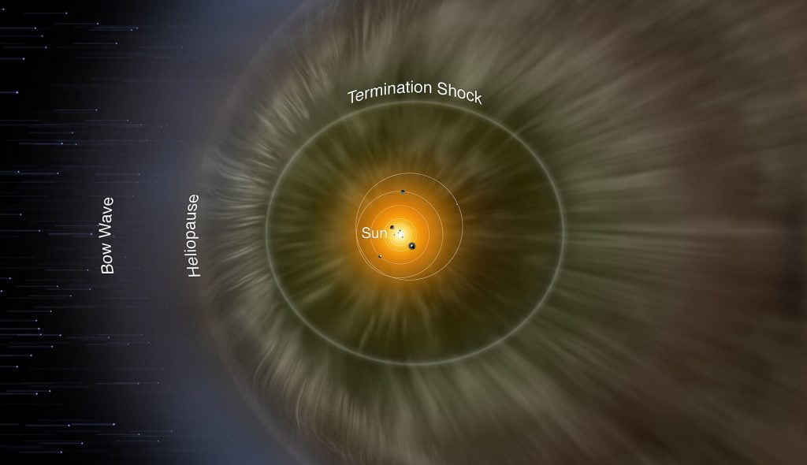

(ယခုဆောင်းပါးမှာ နေ အဖွဲ့အစည်း ဆောင်းပါး စီးရီး မှ ဒုတိယမြောက် ဆောင်းပါး ဖြစ်ပါသည်။ ဆောင်းပါး အပိုင်း (၁) ကို အောက်ပါ လင့်တွင် ဖတ်ရှု နိုင်ပါသည်။
နေအဖွဲ့ အစည်း အပိုင်း (၁) မိတ်ဆက်)
နေရဲ့ ကြယ် အဆင့်အတန်းကို အဝါရောင် ကြယ်ပု (Yellow Dwarf Star) လို့် သတ်မှတ်ကြပါတယ်။ နေကနေပြီး အလင်းရောင် အပြင် အနီအောက် ရောင်ခြည် (Infrared radiation)၊ ခရမ်းလွန် ရောင်ခြည်နဲ့ ရေဒီယို လှိုင်းတွေ ကိုလဲ ထုတ်လွှင့်ပေးပါတယ်။ (အနီအောက် ရောင်ခြည် ဆိုတာ အပူလှိုင်း ဖြစ်ပါတယ်)။
ဆက်စပ် ဆောင်းပါး – အနီအောက် ရောင်ခြည်ဆိုတာ ဘာလဲ
ဒီ လျှပ်စစ် သံလိုက်လှိုင်းတွေ အပြင် နေကနေ ပရိုတွန် (proton) နဲ့ အီလက်ထရွန် (electron) အမှုန်တွေကိုလဲ အရှိန်အဟုန်နဲ့ မှုတ်ထုတ် ပေးပါသေးတယ်။ ဒီ အမှုန်တွေဟာ တစ်နာရီကို မိုင် တစ်သန်း နှုန်းလောက်နဲ့ ထွက်လာကြပြီး နေကနေ အလင်းနှစ် ၁ နှစ် အကွာအဝေး လောက်အထိ ရောက်နိုင်ပါတယ်။ ဒီ အမှုန်တွေကို ဆိုလာလေ (Solar Wind) လို့ ခေါ်ပါတယ်။
ဒီ ဖြစ်စဉ်တွေ အားလုံးရဲ့ မူရင်းကတော့ နေရဲ့ အလယ် ဗဟိုမှာ ဖြစ်ပေါ်နေတဲ့ နျူကလိယ ဖျူးရှင်း ဒြပ်ပေါင်းစပ် မှုပဲ ဖြစ်ပါတယ်။ တကယ်ကတော့ နေဆိုတာ မီးဖိုကြီး မဟုတ်ပဲ နျူကလိယ ဓါတ်ပေါင်းဖို ကြီး တစ်ခု ဖြစ်ပါတယ်။
ဒီ ဖျူးရှင်း ဒြပ်ပေါင်းစပ်မှု ဖြစ်စဉ်မှာ ဟိုက်ဒြိုဂျင် အက်တမ် ၄ လုံးပေါင်းပြီး ဟီလီယံ အက်တမ် တစ်လုံး ဖြစ်လာတာပါ။ ဒီ ပေါင်းစပ်တဲ့ ဖြစ်စဉ်မှာ မြောက်များစွာသော စွမ်းအင်တွေ ထွက်လာပါတယ်။
ဆက်စပ် ဆောင်းပါး – နေက အောက်ဆီဂျင် မရှီပဲ ဘယ်လိုလောင်ကျွမ်းလဲ
နေဟာ မစ်ကီးဝေး ဂလက်ဆီ ကြီးထဲက ကြယ်ပေါင်း များစွာ ထဲက ကြယ်တစ်စင်းသာ ဖြစ်ပါတယ်။ နေ ရဲ့ ကြယ် အမျိုးအစားကို G-type main sequence star အနေနဲ့ သတ်မှတ် ထားပါတယ်။ အဝါရောင် ကြယ်ပု လို့လဲ ရှေးက သတ်မှတ် ခဲ့ပါတယ်။ ဒါပေမယ့် တကယ်တမ်းကျတော့ နေရဲ့ တကယ့် အရောင်ဟာ အဝါရောင် မဟုတ်ပဲ အဖြူရောင် ဖြစ်နေပါတယ်။
နေရဲ့ သက်တမ်းဟာ အခုဆို နှစ်သန်း ၄,၅၀၀ ကျော်ပါပြီ။ နောက်ထပ် နှစ်သန်း ၄,၅၀၀ – ၅,၀၀၀ လောက် ဆက်လက် အသက်ရှင်လိမ့် အုံးမယ်လို့ ယူဆကြပါတယ်။

အတိုင်းအတာများ
နေရဲ့ အချင်းဟာ ကီလိုမီတာ ၁,၃၉၁,၄၀၀ ရှိပါတယ်။ နေဟာ ကမ္ဘာထက် အဆ ၁၀၀ လောက် ပိုကျယ်ပါတယ်။သူ့ရဲ့ ဒြပ်ထုက 1.9891×10^30 kg ရှိပါတယ်။ ဒီ ဒြပ်ထုဟာ ကမ္ဘာ့ ဒြပ်ထုထက် အဆပေါင်း ၃၃၃,၀၀၀ ဆ ပိုများပါတယ်။ အရွယ်အစား အားဖြင့်ဆို နေထဲမှာ ကမ္ဘာ အလုံးပေါင်း ၁.၃ သန်း ဝင်ဆန့်နိုင်မှာ ဖြစ်ပါတယ်။
နေဟာ တစ်စက္ကန့်ကို ဟိုက်ဒြိုဂျင် ဓါတ်ငွေ့ တန် သန်း ၆၀၀ ခန့်ဟီလီယံ အဖြစ် ပြောင်းလဲ ပေးနေပါတယ်။ ဒီ နျူကလိယ ဓါတ်ပြုမှုကနေ ထွက်လာတဲ့ စွမ်းအင်တွေဟာ နေရဲ့ မျက်နှာပြင်ကို ရောက်လာဖို့အ ချိန်အားဖြင့် နှစ် ၁၀,၀၀၀ ကနေ ၁၇၀,၀၀၀ လောက် ကြာမယ်လို့ ခန့်မှန်း ကြပါတယ်။
နေရဲ့ ဒြပ်ထုဟာ နေအဖွဲ့အစည်း တစ်ခုလုံး မှာရှိတဲ့ စုစုပေါင်း ဒြပ်ထုရဲ့ ၉၉.၈၆% ရှိပါတယ်။ ဆိုလိုတာက နေအဖွဲ့အစည်းထဲမှာ ရှိတဲ့ ဂြိုဟ်တွေ၊ လတွေ၊ ဂြိုဟ်သိမ် ဂြိုဟ်မွှားတွေ၊ ဥက္ကာခဲတွေ အားလုံး ပေါင်းရင်တောင် နေရဲ့ ၁ ရာခိုင်နှုန်း မရှိပါဘူး။
နေရဲ့ တောက်ပမှုဟာ မစ်ကီးဝေး ဂလက်ဆီ ထဲက ကြယ်တွေရဲ့ ၈၅% ထက် ပိုပြီး တောက်ပပါတယ်။
နေက အလင်း ကမ္ဘာကို ရောက်ဖို့ အချိန် ၈ မိနစ်နဲ့ ၁၉ စက္ကန့် ကြာပါတယ်။
မွေးဖွားလာပုံ
နေဟာ လွန်ခဲ့တဲ့ နှစ်သန်း ၄,၅၆၇ လောက်တုန်းက ဓါတ်ငွေ့နဲ့ ဖုန်မှုန့် တိမ်တိုက် ကြီးကနေ မွေးဖွားလာခဲ့တယ်လို့ ယူဆကြပါတယ်။ဒီ တိမ်တိုက်ကြီးရဲ့ အလယ် ဗဟိုမှာ ပြင်းထန်တဲ့ ဆွဲငင်အားကြောင့် ဓါတ်ငွေ့တွေဟာ ဘောလုံးလို လုံးဝန်း စုစည်းမိ လာပါတယ်။ ဆွဲငင်အားကြောင့် ဖိအားလဲ များလာပါတယ်။ ဖိအား အရမ်း ပြင်းထန်လာတဲ့ အချိန်မှာတော့ အဏုမြူ ဓါတ်ပြုမှု စဖြစ်လာပြီး နေအဖြစ် အသွင် ပြောင်းလဲ သွားပါတယ်။
ဒီ အဏုမြူ ဓါတ်ပြုမှုကြောင့် ထွက်လာတဲ့ စွမ်းအင်တွေက နေကနေ အလင်းနဲ့ အပူ အနေနဲ့ ထွက်လာ ကြပါတယ်။
ဒီ ထွက်လာတဲ့ စွမ်းအင်တွေက ဓါတ်ငွေ့တိမ်တိုက် တွေကို ပတ်ခြာလည်ကို တွန်းထုတ် လိုက်ပါတယ်။ ဒီ လွင့်စင် ထွက်လာတဲ့ ဓါတ်ငွေ့တွေကနေ ဂြိုဟ်တွေနဲ့ အခြား လတွေ၊ ဂြိုဟ်သိမ် ဂြိုဟ်မွှားတွေ ဖြစ်လာတာ ဖြစ်ပါတယ်။
ဆက်စပ်ဆောင်းပါး – နေဘယ်လို စတင် မွေးဖွား လာခဲ့သလဲ
နေပတ်လမ်း
ကမ္ဘာနဲ့ အခြားဂြိုဟ်တွေက နေကို ပတ်နေကြ သလိုပဲ နေကလဲ မစ်ကီးဝေး ဂလက်ဆီ (Milky Way Galaxy) ကြီးရဲ့ ဗဟိုကို ပတ်နေပါတယ်။ နေဟာ မစ်ကီဝေးရဲ့ ဗဟိုကနေ အလင်းနှစ် ၂၇,၂၀၀ ခန့် အဝေးမှာ ရှိပါတယ်။နေက မစ်ကီးဝေး ဂလက်ဆီ ကြီဂထဲမှ တစ်နာရီ ကီလိုမီတာ ၈၂၀,၀၀၀ နှုန်းနဲ့ လည့်ပတ် နေတာပါ။ ဒီ နှုန်းအတိုင်းဆို မစ်ကီးဝေးရဲ့ ဗဟိုကို တစ်ပတ် ပတ်မိဖို့ အချိန် နှစ်သန်း ၂၃၀ ကြာမှာ ဖြစ်ပါတယ်
ဆက်စပ်ဆောင်းပါး – နေကရော ကမ္ဘာလို ဝင်ရိုးပေါ်မှာ လည်နေသလား
မျက်နှာပြင်သွင်ပြင်များ
နေဟာ ဓါတ်ငွေ့တွေနဲ့ ဖွဲ့စည်း ထားတာမို့ သူ့ရဲ့ မျက်နှာပြင် သွင်ပြင်တွေကလဲ အတည် မရှိပါဘူး။နေရဲ့ မျက်နှာပြင်ကို နေကြည့် မှန်ပြောင်း (solar telescope) တွေနဲ့ ကြည့်မယ်ဆိုရင်အစက်အပြောက် တွေကို တွေ့ကြရမှာ ဖြစ်ပါတယ်။ ဒီ အစက်အပြောက် တွေကို sunspots တွေလို့ ခေါ်ပါတယ်။ ဒီ နေပြောက် တွေဟာ နေရဲ့ သံလိုက်စက်ကွင်း လှုပ်ရှားမှုကြောင့် ဖြစ်လာတာပါ။

တခါတရံ နေကနေ မီးတောက်တွေ အာကာသ ထဲကို လွင့်ထွက်လာတာမျိုး ဖြစ်တတ်ပါတယ်။ ဒီ နေမီးတောက်တွေရဲ့ အရွယ်အစားဟာ အမျိးမျိုး ရှိနိင်ပါတယ်။ အရမ်းကြီးတဲ့ နေမီးတောက် ကြီးတွေဆိုရင် ကမ္ဘာ အရွယ်ထက်တောင် ပိုကြီးပါသေး။
ဖွဲ့စည်းပုံ
နေကို အဓီက ဟိုက်ဒြိုဂျင် နဲ့ ဟီလီယံ ဓါတ်ငွေ့တွေနဲ့ ဖွဲ့စည်းထားပါတယ်။ နေရဲ့ ဒြပ်ထု ရဲ့ ၇၁% က ဟိုက်ဒြိုဂျင် ဖြစ်ပြီး ၂၇% က ဟီလီယံ ဖြစ်ပါတယ်။ ကျန်တဲ့ ၂% က အောက်ဆီဂျင်၊ ကာဗွန်၊ နိုက်ထရိုဂျင်၊ ဆီလီကွန် နဲ့ အခြား ဒြပ်စင်တွေနဲ့ ဖွဲ့စည်းထားပါတယ်။လေထုအလွှာများ (Atmosphere)
နေ ရဲ့ လေထုကို အလွှာ အထပ်ထပ်နဲ့ ဖွဲ့စည်း ထားပါတယ်။ ဒီအထဲမှာ အရေးအပါဆုံး အလွှာ ၃ လွှာ ရှိပါတယ်။ (လေထု ဆိုပေမယ့် အဓိကက ဟိုက်ဒြိုဂျင် ဓါတ်ငွေ့တွေနဲ့ ဖွဲ့စည်း ထားတာပါ။)(၁) ဖိုတို စဖီးယား (Photosphere)
ပြင်ပကနေ ကြည့်ရင် မြင်နိုင်တဲ့ အလွှာတွေ အထဲမှာ အောက်ဆုံး အလွှာ ဖြစ်ပါတယ်။ ဒီအလွှာထက် နက်တဲ့ အလွှာတွေ အားလုံးက အရမ်း သိပ်သည်းပြီး အလင်းလဲ မဖြတ်နိုင်ပါဘူး။ဖိုတိုစဖီးယား အလွှာရဲ့ အပူချိန်က အောက်ခြေမှာ ၆,၁၂၅ ဒီဂရီ စင်တီဂရိတ် ရှိပြီး အပေါ်ပိုင်း မှာတော့ ၄,၁၂၅ ဒီဂရီ စင်တီဂရိတ် ရှိပါတယ်။ ဖိုတို စဖီးယားရဲ့ အပူချိန်က ဒီဂရီ စင်တီဂရိတ် ၁၅ သန်းလောက်ထိ ရှီတဲ့ နေရဲ့ ဗဟိုနဲ့ ယှဉ်ရင် အတော်လေး အေးတယ်လို့ ပြောလို့ ရပါတယ်။
ဖိုတို စဖီးယား ရဲ့ အထူဟာ ကီလိုမီိတာ ၅၀၀ (မိုင် ၃၀၀) လောက်ပဲ ထူပါတယ်။

(၂) ခရိုမို စဖီးယား (Chromosphere)
ဖိုတိုစဖီးယားရဲ့ အပေါ်မှာတော့ ခရိုမိုစဖီးယား (Chromosphere) အလွှာ ရှိပါတယ်။ ဒီ ခရိုမို စဖီးယား အလွှာမှာ ဟိုက်ဒြိုဂျင်တွေဟာ ပူလွန်းတော့ အနီရောင် တောက်နေပါတယ်။ ပုံမှန် ဆိုရင် နေရဲ့ အလင်းရောင်က ကွယ်ထားတာမို့ ဒီ အနီရောင် တောက်နေတာကို မမြင်ရပါဘူး။ နေအပြည့် ကျတ်တဲ့အ ခါမျိုးမှာသာ ခရိုမို စဖီးယားကို ကမ္ဘာက တွေ့မြင်နိုင်တာ ဖြစ်ပါတယ်။ဒီ ခရိုမို စဖီးယား အလွှာဟာ နေရဲ့ အတွင်းပိုင်းက အပူကို မျက်နှာပြင်ပေါ် ရောက်အောင် သယ်ဆောင်တဲ့ နေရာမှာ အရေးပါတယ်လို့ ပညာရှင်တွေက ယူဆ ကြပါတယ်။
(၃) ကိုရိုနာ (Corona)
နေရဲ့ တတိယမြောက် အလွှာ ဖြစ်ပါတယ်။ အပေါ်က ခရိုမို စဖီးယား အလွှာလိုပဲ ဒီ ကိုရိုနာ အလွှာကိုလဲ နေကြတ်တဲ့ အချိန်ကျမှ မြင်နိုင်ပါတယ်။ဒီ အလွှာမှာ နေက လျှပ်စစ်အား ဝင်နေတဲ့ ဓါတ်ငွေ့တွေ (ionized gas) အာကာသ ထဲကို လွင့်ပျံ ထွက်နေတာပါ။ နေကြတ်တဲ့ အချိန်မှာ ဒီအလွှာကို အဖြူငွေ့တွေ အနေနဲ့ မြင်ရမှာ ဖြစ်ပါတယ်။
ဒီ ကိုရိုနာ အလွှာရဲ့ အပူချိန်ဟာ သူ့အောက်က အလွှာတွေနဲ့ ယှဉ်ရင် အလွန်ကို ပူပြင်းပါတယ်။ ဒီ အလွှာရဲ့ အပူချိန်ဟာ ဒီဂရီ စင်တီဂရိတ် ၂ သန်းခန့်ထိ ရှိနိုင်ပါတယ်။
သူ့ဆီက လွင့်လာတဲ့ လျှပ်စစ်ဆောင် ဓါတ်ငွေ့တွေ အေးသွားတဲ့ အခါ ဆိုလာလေ (Solar Wind) အနေနဲ့ အာကာသ ထဲကို တိုက်ခတ် လာပါတယ်။
ဒီ ကိုရိုနာ အလွှာက သူ့အောက်က အလွှာတွေထက် ဘာလို့ အဆ ၃၀၀ လောက် ပိုပူရလဲ ဆိုတဲ့ မေးခွန်းရဲ့ အဖြေကိုတော့ အခုထိ သိပ္ပံ ပညာရှင်တွေ ဖြေကြားနိုင်ခြင်း မရှိသေးပါဘူး။
ဟီလီယိုစဖီးယား (Heliosphere)
ဆိုလာလေ တိုက်ခတ်ရာ ရပ်ဝန်း အားလုံးကို ဟီလီယို စဖီးယား (Heliosphere) လို့ ခေါ်ပါတယ်။ တနည်းအားဖြင့် ဒါဟာ နေ အဖွဲ့အစည်းရဲ့ နယ်နိမိတ်လဲ ဖြစ်ပါတယ်။ ဒီ ဟီလီယို စဖီးယား ဟာ ပလူတို ဂြိုဟ်ပုရဲ့ ပတ်လမ်းထက် ပိုဝေးတဲ့ နေရာထိ ရောက်ပါတယ်။
ဆက်စပ်ဆောင်းပါး – နေအဖွဲ့အစည်း၏ နယ်နိမိတ်အား ရှာဖွေခြင်း
နေရဲ့ ဘဝနိဂုံး
သိပ္ပံ ပညာရှင်တွေရဲ့ ခန့်မှန်းချက် အရ ကျွန်တော်တို့ရဲ့ နေဟာ ဘဝသက်တမ်း တစ်ဝက် ကျိုးနေပါပြီ။ နောက် နှစ် သန်း ၁,၀၀၀ လောက် အတွင်းမှာ နေရဲ့ အပူစွမ်းအင်ကြောင့် ကမ္ဘာကြီးရဲ့ လေထု ပျက်စီးသွားပြီး သမုဒ္ဒရာတွေ ခန်းခြေက်ကုန်မယ်လို့ ဆိုပါတယ်။နောက် နှစ် သန်း ၄,၀၀၀ ကျော်လောက်ကျရင် နေဟာ ဟိုက်ဒြိုဂျင်တွေ ကုန်ခမ်းလာတာမို့ ဖေါင်းကားပြီး နီရဲ လာပါလိမ့်မယ်။ အဲ့ဒီ အချိန် မှာ နေရဲ့ အရွယ်ဟာ အခုအရွယ်ထက် အဆပေါင်း ၂၅၀ လောက် ပိုကြီးလာမယ်လို့ ဆိုပါတယ်။ ဒီအချိန်မှာ နေဟာ ကမ္ဘာပတ် လမ်းကို ကျော်လွန်တဲ့ အထိ ကြီးလာပြီး ကမ္ဘာကြီးကိုပါ ဝါးမြိုသွားမှာ ဖြစ်ပါတယ်။

ဆက်စပ်ဆောင်းပါး – နေရဲ့သက်တမ်း ကုန်သွားရင် ဘာဖြစ်လာမလဲ
Reference: Sun | Wikipedia